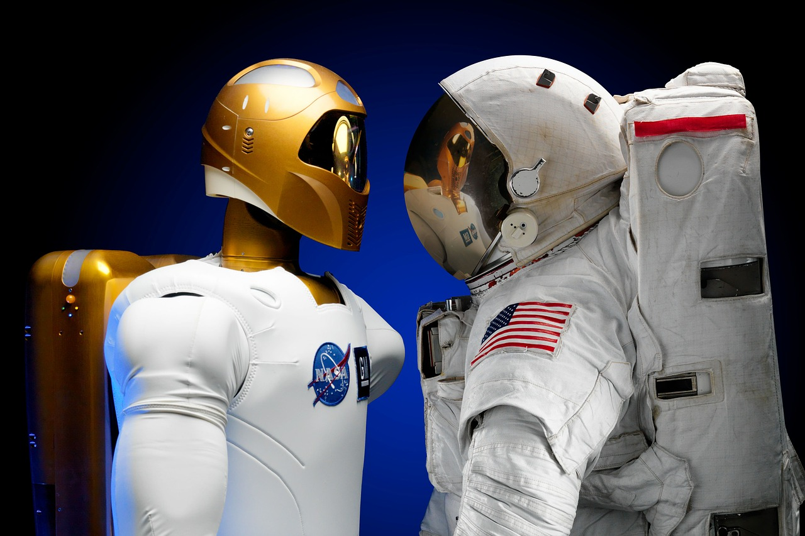

AI growth

By Harshad Borde, SEO at Transparency Market Research (2017-present)
Globally, there is a wave of artificial intelligence across various industries, especially consumer electronics and healthcare. The wave is likely to continue in the years to come with the expanding base of applications of the technology.
Artificial Intelligence is expected to witness phenomenal growth over the coming years as organizations worldwide have started capitalizing on the benefits of such disruptive technologies for effective positioning of their offerings and customer reach. In addition, the increasing It spending by enterprises across the globe for better advancements in their services and products.
The domicile of a large number of the leading technology firms enables early introduction and high acceptance of artificial intelligence in the region. Moreover, high government funding is playing a pivotal role in the technological development of artificial intelligence in the region. The widening scope of applications the technology in various verticals, including media and advertising, retail, BFSI, consumer electronics, and automotive are also contributing.
AI predictions

By James Warner, Data Scientist at Nexsoftsys
As we know AI is the most powerful as well as fast developing technology all over the world. AI one type of artificial consciousness that work is done by command of human but there is no doubt of that AI do work more efficient, better and cheaply than humans and most of the business now use AI for complete their work.
AI has a very bright future all over the world. in the future mostly work and field depend on AI. As we know that every coin have two sides if AI has a bright future as well as it also impacts badly on Humans. here we have some points that consider as advantages of AI because of that
AI have bright future.
Minimum fault:
we use AI in many ways for reducing the mistakes and get maximum accuracy in work.
Everyday utilization :
AI is used by each body who is cognizant with technology basically AI is used in each machine whom we have to connect on a regular basis and we have to just command and get results.
Digital Assistant :
Using AI IT field create Digital assistant who can make your life easy we can ask for play song, search for us, and many other things that we can ask a digital assistant to do for us.
Time saver:
AI has done work more fastly than humans as well it was one type of machine so it will never tired from work and never tack break so it does work fastly so it will save the time of humans.
Efficient work:
Human generally do mistakes in their work not intensely but by mistake but they do the mistake that is one of the biggest reason we need AI because AI did work without any mistake and provides a very efficient work
Disadvantages:

1. Dependent on AI:
After launching AI somewhere human was less or more dependent on AI. That's one type of bad habits human addicted. After AI humans all work dependent on AI that grabs in dependency.
2. In future AI become smarter than Humans:
day by day AI becomes smarter that reduce the requirements of Humans and because of that humans loss, the jobs in the future and many of the fields have no needs of human.
3. Reduce the power of decision making:
The computer gets smarter and human fully depended on machinery AI that snatches power of decision making from a human.